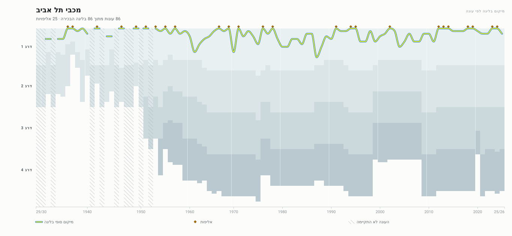
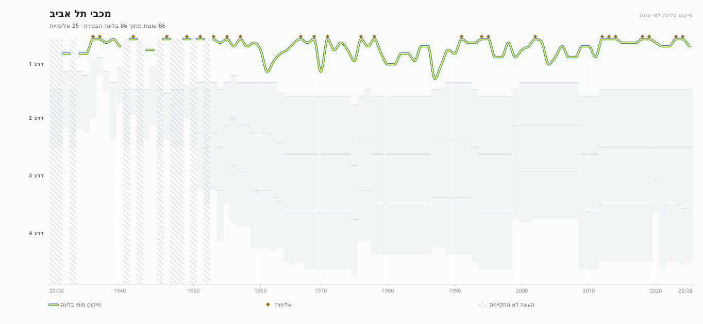
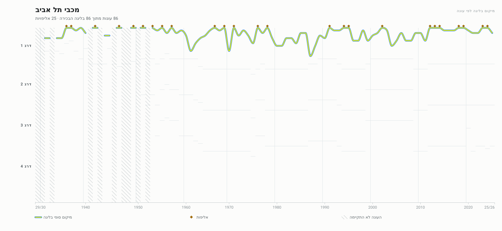
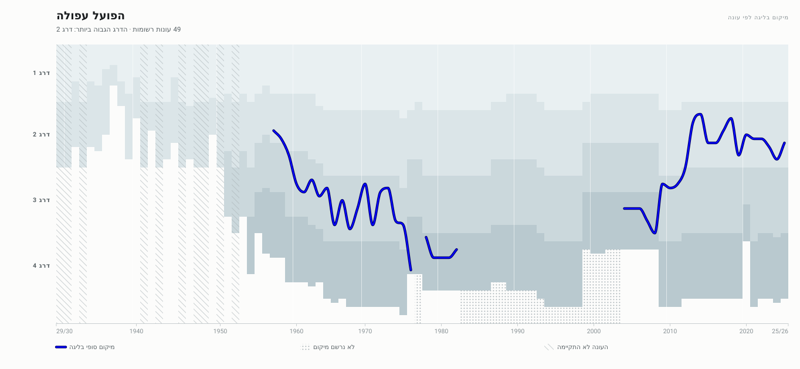
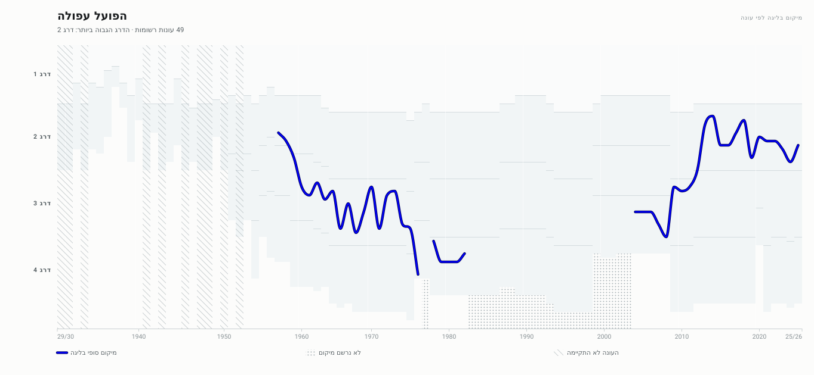
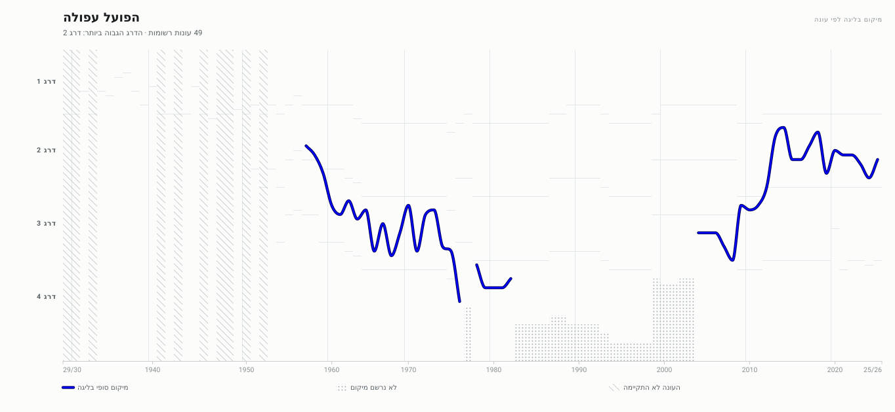
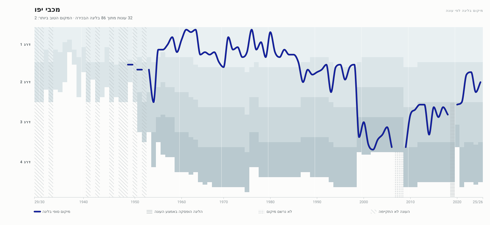
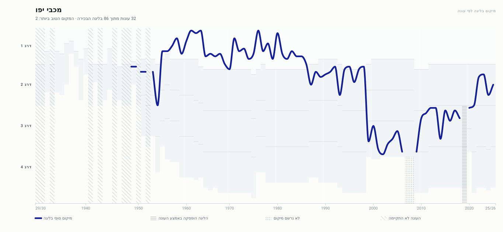
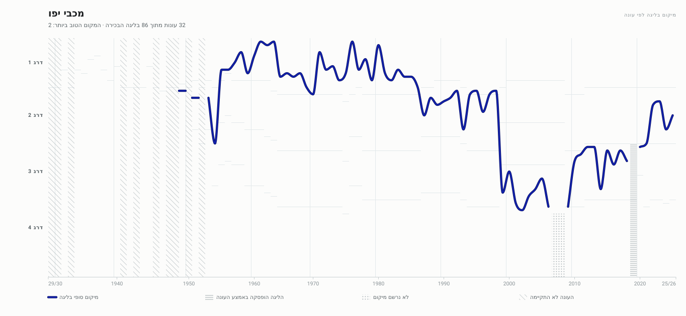

שלוש גרסאות של אותו גרף, אותם נתונים בדיוק — רק הטיפול הגרפי משתנה.
הציר האופקי והאנכי קבועים בכל הגרסאות, כדי שאפשר יהיה להשוות בין קבוצות.
הנימוקים המלאים, כולל מה כל בחירה עולה, נמצאים ב־docs/DESIGN.md.
מכבי תל אביב Maccabi Tel Aviv — never relegated — the flat case
נוכחי · currentפסים אפורים מלאים

שקט · quietשני גוונים בהירים וקו הפרדה

מודרני · modernללא מילוי כלל — רק קו הפרדה

הפועל עפולה Hapoel Afula — moved between many leagues
נוכחי · currentפסים אפורים מלאים

שקט · quietשני גוונים בהירים וקו הפרדה

מודרני · modernללא מילוי כלל — רק קו הפרדה

מכבי יפו Maccabi Jaffa — the other case named in the review
נוכחי · currentפסים אפורים מלאים

שקט · quietשני גוונים בהירים וקו הפרדה

מודרני · modernללא מילוי כלל — רק קו הפרדה

הפועל תל אביב Hapoel Tel Aviv — a long record, one relegation